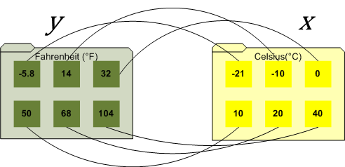
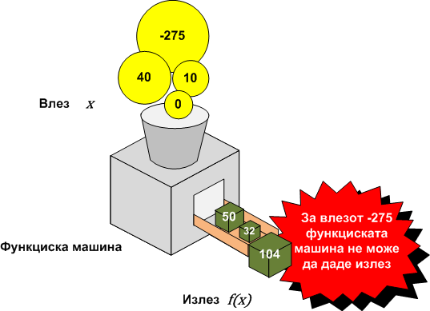

Функцијата е основен математички објект кој математичарите и научниците го користат за да го опишат односот на една количина со друга.
Дефиниција на функција
Дефиниција 1
Ако променливата `y` зависи од променливата `x` така што секоја вредност на `x` определува точно една вредност на `y`, тогаш велиме дека `y` е функција од `x`.
Gottfried Wilhelm Leibniz го воведува терминот функција за да ја покаже зависноста на една количина од друга.
Функциите вообичаено се преставуваат на еден од следните начини:
- нумерички со табели
- геометриски со график
- алгебарски со формула
- описно со зборови
Leonhard Euler осмислил идеја функциите да се означуваат со букви од абецедата, со што се овозможува повикување на функции без да се наведуваат специфични формули, графици или табели. За да се разбере Euler-овата идеа функцијата треба да се замисли како компјутерски програм кој го обработува на некој начин влезот `x` и произведува точно еден излез `y`. Компјутерскиот програм сам по себе е објект па може да му дадеме име, да речеме `f`. Па според тоа функцијата `f` (компјутерскиот програм) произведува единствен илез `y` за секој влез `x`. Тоа го укажува и Дефеницијата 2.

Дефиниција 2
График на функција `y = f(x`) е множеството точки од `xy`- рамнината од облик `(x, f(x))`, за `x in D_f`, т.е.
Во оваа дефиниција терминот „единствен излез“ значи „точно еден“ па според тоа функцијата не може да додели два различни излези за еден ист влез. Долната слика прикажува график за просечна тежина на примерок од 100 студенти. Овој график не ја преставува зависноста `W` како функција од `А` бидејки за некои вредностина `A` има повеќе различни вредности за. Ова е нормално бидејки луѓе со исти години можат да тежат различно.

Независни и зависни променливи
За дадено `x`, излезот на функцијата `f` се нарекува вредност на `f` во `x` или слика на `x` со `f`. Понекогаш излезот го означуваме со една буква, да речеме `y`, и тогаш пишуваме:
`y = f(x)`.
Во последното равенство променливата `x` се нарекува независна променлива (или аргумент) на `f`, а променливата `y` се нарекува зависна променлива на `f`.
Оваа терминологија има намера да укаже дека `x` може слободно да се менува, но кога еднаш `x` ќе добие одредена вредност соодветната вредност за `y` се одредува. За сега ќе ги земаме во предвид функциите каде независната и зависната променлива се реални броеви, при што велиме дека функцијата `f` е со реална вредност од реална променлива.
Објаснување на дефиниција на функција
Прво треба да се потсетиме на поимот равенство. Равенство е математички исказ што вели дека левата и десната страна на знакот за равенство `=` се истоветни. Пример за равенство би бил `2 + 2 = 4`.
Сега кога знаеме што е равенство, наједноставно објаснување за функција би било: Равенство е функција ако за секое `x` во доменот (сите `x` кои можат да се внесат во равенството) равенството ќе даде точно една вредност на `y`, кога се решава равенството за дадено `x`.
Пример за функција е `f(x)=(x * 9/5) + 32` (Конверзија на целзиусови степени во фаренхајт скалата)
На долната слика се гледа дека за секое `x` се добива точно една вредност на `y`.
Функцијата можеме да ја замислиме како некоја машина која има еден влез. Во машината се внесува некој објект кој е во доменот и според некое зададено правило се претвара во друг објект и се исфрла од машината.
Правилото по кое работи горната машина е функцијата `f(x)=(x * 9/5) + 32`
Прашање е зошто машината не дава излез кога вредноста на влезот е -275. Уште поголемо прашање е зашто Google конверторот дава вредност -463.
a. `y = x^2 + 1`
Прикажи решенија
Без разлика која вредност ја доделуваме на `x` се добива точно една вредност на `y`, при решавање на равенството за вредност `x`. Ова е во согласност со Дефиниција 1 за функција, па според тоа равенството е функција.
Прикажи решенија
Да ја дадеме вредноста на `x`, на пример `x = 3` и да ја вметнеме во равенството.
`y^2 = 3 + 1`
Сега добивме две вредности за `y`, `y = 2` и `y =-2`.
Ова е во спротивност со Дефиницијата 1 па според тоа ова равенство не е функција.
Треба да се напомене дека е доволно ова да биде случај само за една вредност на `x` за да равенството не биде функција. На пример ако ја користевме вредноста `x = - 1` ќе добиевме точно една вредност за `y`, `y = 0` што е во согласност со Дефиниција 1 но поради двојната вредност за `x = 3` ова равенство не е функција.
Пример 1
| `x` | `0` | `1` | `2` | `3` |
|---|---|---|---|---|
| `y` | `3` | `4` | `-1` | `6` |
`f (0) = 3` `f` придружува `y = 3` за `x = 0`.
`f (1) = 4` `f` придружува `y = 4` за `x = 1`.
`f (2) = -1` `f` придружува `y = -1` за `x = 2`.
`f (3) = 6` `f` придружува `y = 6` за `x = 3`.
Пример 2
Равенството
`y = 3x^2 –4x+2`
го има обликот `y = f(x)` каде функцијата `f` е дадена со формулата:
За функцијата
`f (x) = 3x^2 –4x+2`
`f (0) = 3*(0)^2 –4*(0)+2=2`
т.е. `f` придружува `y = 2` за `x = 0`.
придружува - дава, соодветствува, вредноста на функцијата за `x` e,
Графици на функции
Ако `f ` е реална функција од реална променлива, тогаш графикот од `f` во `xy`- рамнината е дефиниран како график на равенството `y = f(x)`. На пример графикот на функцијата `f(x) = x` е график на равенството `y = x`,

График на функција дава визуелна информација за самата функција.
Дефиниција 4
График на функција `y = f(x`) е множеството точки од `xy`-рамнината од облик `(x, f(x))`, за `x in D_f`, т.е.
`Gamma_f {(x, f(x)) | x in D_f}`

`y` – координатата на точка од графикот на `f` е
вредноста на `f` во соодветната `x`-координата.
Вредностите на `x` за кои што `f(x) = 0` се `x`-координатите на точките во кои што графикот на `f` ја сече `x`-оската. Тие се нарекуваат нули на функцијата `f`, корени на равенката `f(x) = 0`, или пресеци на графикот на `y = f(x)` со `x`-оската.

Тест со вертикални прави
Крива во `xy`-рамнината е график на некоја функција `f` ако и само ако не постои вертикална права која што ја сече кривата во повеќе од една точка.

Оваа крива не може да биде график на функција.
Пример 3
Кривата определена со равенството:
`x2 + y2 = 25`
е кружница со радиус 5 и центар во координатниот почеток и поради тоа постојат вертикални линии кој го сечат графикот во повеќе од една точка. Поради ова ова равенство не ја дефинира `y` како функција од `x`.

Функцијата апсолутна вредност
Апсолутна вредност на реален број `x` се дефинира со:
`|x|={(x, x, >=, 0),(-x, x, <, 0):}`
Ефектот од примена на апсолутна вредност на некој број е бришење на знакот минус пред бројот ако тој е негативен, а бројот не се менува ако тој е позитивен.
`|5|=5, |-4/7|=4/7, |0|=0`
Својства на апсолутна вредност. Ако `a` и `b` се реални броеви тогаш:
a) `|-a|=|a|` Еден број и неговиот спротивен имаат иста апсолутна вредност
b) `|ab|=|a||b|` Апсолутна вредност на производ е производ од апсолутните вредности на множителите.
c) `|a/b|=|a|/|b|, b!=0` Апсолутна вредност на количник е количник од апсолутните вредности на
d)`|a+b|<=|a||b|` Неравенство на триаголник
Графикот на функцијата `f (x) = |x|` се добива со цртање на двата дела на равенството
`y={(x, x>=0),(-x, x<0):}`

Функции дефинирани по делови
Функцијата на апсолутна вредност `f (x) = |x|` е пример на функција која што е дефинирана по делови, во смисла дека формулата за `f` се менува во зависност од вредноста на `x`.
Пример 4
Нацртај го графикот на функцијата дефинирана по делови со формулата
`f={(0,x<=-1),(sqrt(1-x^2),x<1),(x,x>=1):}`

Домен и ранг на функции
Ако `x` и `y` се одредени со равенството `y = f(x)`, тогаш множеството од сите дозволени влезови (`x`- вредности) се вика домен на `f` , а мноеството од излезите (`y`- вредностите) се вика ранг на `f` . На пример ако `f` е функција дефинирана со табелата во примерот 1, тогаш доменот е множеството `{0, 1, 2, 3}` а рангот е множеството `{−1, 3, 4, 6}`.
Понекогаш физичките или геометриските размислувања наметнуваат ограничувања на дозволените влезови на функцијата. На пример, ако `y` ја означува областа на квадрат на страна `x`, тогаш овие променливи се поврзани со равенката `y = x^2`. Иако оваа равенка дава единствена вредност на `y` за секој реален број `x`, фактот дека должините не треба да бидат негативни, го наметнува условот дека `x ≥ 0`.
Кога функцијата е дефинирана со математичка формула, самата формула може да наметне ограничувања на дозволените влезови. На пример, ако `y = 1 / x`, тогаш `x = 0` не е дозволен влез, бидејќи поделбата со нула е недефинирана, а ако `y = sqrt(x)`, тогаш негативните вредности на `x` не се дозволени влезови, бидејќи тие создаваат имагинарни вредности за `y` и ние се согласивме да ги земеме предвид само реалните функции на вистинска променлива. Во принцип, ја даваме следната дефиниција.
Во некои случаи кога дефинираме функција доменот може да биде експлицитно наведен. На пример, ако `f (x) = x^2` е плоштина на квадрат со страна `x`, тогаш пишуваме:
`f(x)=x^2 x>=0`
што значи дека доменот на `f` е множеството од ненегативни реални броеви.
Пример 3: Најди го доменот на функцијата
`f(x)=(x^4 - 1)/(x - 1)`
Rешение 3:
`D_f = RR \\ {1}`
Влијание на алгебарски операции на доменот на функција
Алгебарски изрази често се упростуваат со скратување на заедничките множители во броителот и именителот. Меѓутоа, мора да внимаваме кога упростуваме формули со кои се зададени функции, бидејќи оваа постапка може да го промени доменот на функцијата, па според тоа и самата функција.
Пример 5
Доменот на функцијата се `f(x)=(x^2-4)/(x-2)`состои од сите реални `x` освен `x = 2`. Но, ако го скратиме заедничкиот множител во броителот и именителот, добиваме:
`f(x)=(x^2-4)/(x-2)=((x-2)(x+2))/(x-2)=x+2`
Ако се определува домен од овој израз, ќе се добие дека домен на функцијата е `RR`, што не е точно.
Да ги разгледаме графиците на функциите
`f(x)=(x^2-4)/(x-2)`, `g(x)=x+2`
Тие се разликуваат само во точката `x = 2`.
Графикот на функцијата `g` е правата `y = x + 2` (Слика а)), a графикот на `f` е истата права со дупка во `x = 2` (Слика б), бидејќи функцијата не е дефинирана во таа точка.

Така функцијата
`f(x)=(x^2-4)/(x-2)`
може да се запише како
`f(x)=x+2`, `x in RR \\{2}`
Дефиниција 8
Две функции `f` и `g` се еднакви ако
1. `D_f = D_g`
и
2. `f (x) = g (x)`, за секое `x` in `D_f =D_g`